«No hay secreto. Tienes que conducir.
Conducir, conducir y conducir»

NUESTRO CIRCUITO
Contamos con 2 trazados diferentes (largo y corto), con una longitud de 1800m y 1400m respectivamente.
Nuestros trazados son sin duda uno de los más híbridos de todo España, permitiendo evaluar a los pilotos su calidad en recta, frenada y curva lenta.
Además, contamos con varias referencias en nuestro trazado a los circuitos más icónicos del automovilismo, como pueden ser Suzuka, Jarama, Mónaco o Valencia.

| TIPO DE TRAZADO | LONGITUD | CURVAS | RECTAS | TRAZADO |
|---|---|---|---|---|
| Largo | 1800m | 24 | 2 |  |
| Corto | 1400m | 19 | 1 |  |
¿QUIÉNES SOMOS?
Somos un equipo de profesionales apasionados por el mundo del motor y la competición. Nuestro objetivo es ofrecer a nuestros clientes la mejor experiencia posible, garantizando la seguridad y diversión en todo momento.
Contamos con un equipo de mecánicos altamente cualificados y con una amplia experiencia en el sector, que se encargan de mantener en perfecto estado nuestros karts y el circuito.
Además, nuestro personal de pista está formado por pilotos profesionales que se encargan de supervisar y garantizar la seguridad de nuestros clientes en todo momento.
¿POR QUÉ ELEGIRNOS?
Seguridad
La seguridad de nuestros clientes es nuestra prioridad. Contamos con un equipo de profesionales áltamente cualificados que se encargan de supervisar y garantizar la seguridad en todo momento.
Diversión
En Karting Fernández nos esforzamos por ofrecer a nuestros clientes la mejor experiencia posible, garantizando la diversión y la emoción en todo momento.
Calidad
Contamos con karts de última generación y un circuito de alta calidad, que garantizan la mejor experiencia de conducción posible para nuestros clientes.